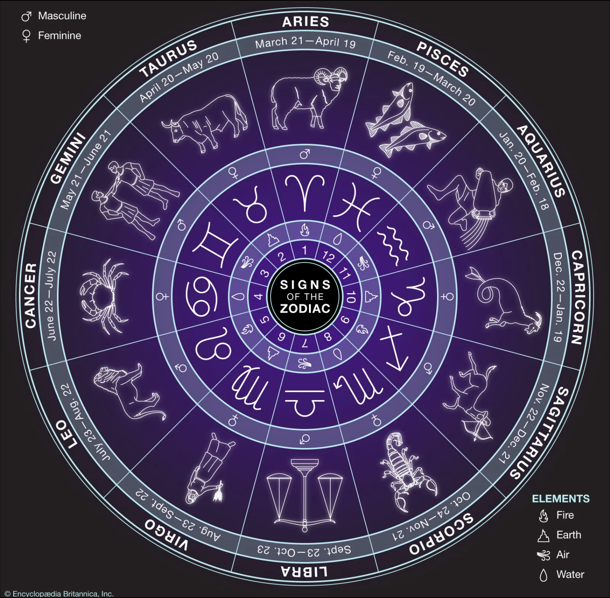
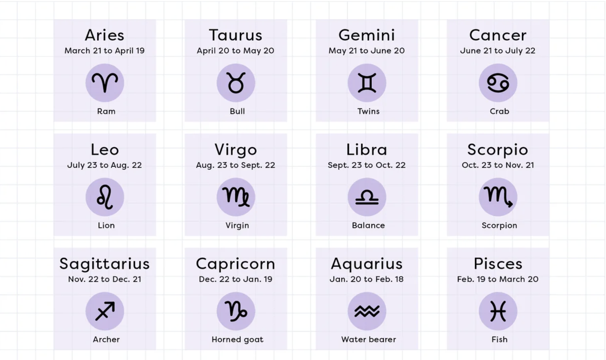

Zodiac, a belt of 12 constellations around the sky through which the Sun,
the Moon,
and the naked-eye planets
move as seen from Earth.
In astrology the outcome of an event (most notably, someone’s birth) is affected by the zodiacal positions of the Sun,the Moon, and the planets when that event happened. Beyond their astrological importance, zodiac signs play a central role in modern popular culture,
with millions of people consulting their daily horoscopes.
In astrology the 12 zodiacal signs are divided into four groups based on the traditional elements:
earth
air
fire
water
The study ofASTRO involves understanding the influence of zodiacal positions on human behavior and personality.
In astrology, Aries is the first sign...
In astrology, Taurus is the second sign of the zodiac, considered as governing the period from about April 20 to about May 20
In astrology, Gemini is the third sign of the zodiac, considered as governing the period from about May 21 to about June 21
In astrology, Cancer is the fourth sign of the zodiac, considered as governing the period from about June 22 to about July 22
In astrology, Leo is the fifth sign of the zodiac, considered as governing the period from about July 23 to about August 22
In astrology, virgo VIRGOis the sixth sign of the zodiac, considered as governing the period from about August 23 to about September 22
In astrology,Libra is the seventh sign of the zodiac, considered as governing the period from about September 23 to about October 22
In astrology, Scorpius is the eighth sign of the zodiac, considered as governing the period from about October 24 to about November 21
In astrology, Capricorn is the tenth sign of the zodiac, considered as governing the period from about December 22 to about January 19
In astrology, Aquarius is the eleventh sign of the zodiac, considered as governing the period from about January 20 to about February 18


| SIGN | DATE |
|---|---|
| Aries | March 21–April 19 |
| Taurus | April 20–May 20 |
| Gemini | May 21–June 21 |
| Cancer | June 22–July 22 |
| Leo | July 23–August 22 |
| Virgo | August 23–September 22 |
| Libra | September 23–October 22 |
| Scorpius | October 24–November 21 |
| Sagittarius | November 22–December 21 |
| Capricorn | December 22–January 19 |
| Aquarius | January 20–February 18 |
| Pisces | February 19–March 20 |